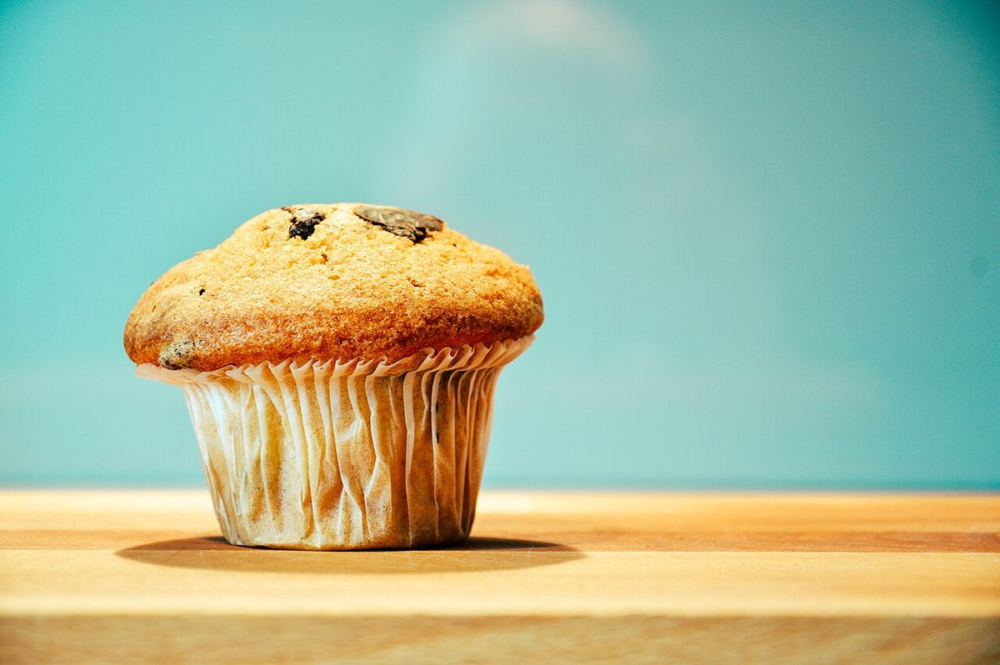

第3号発 NCAFE宛 ミナサマ字数 12
メニュー ハ ジュンビチュウ
メニュー
メニューと価格は準備中です。確認でき次第、こちらに掲載します。
| 品名 | 料金 |
|---|---|
| 準備中 | 準備中 |
下の写真は、カフェの雰囲気を伝えるためのフリー素材です。お店で提供しているものではなく、提供メニューを示すものでもありません。




第3号発 NCAFE宛 ミナサマ字数 12
メニューと価格は準備中です。確認でき次第、こちらに掲載します。
| 品名 | 料金 |
|---|---|
| 準備中 | 準備中 |
下の写真は、カフェの雰囲気を伝えるためのフリー素材です。お店で提供しているものではなく、提供メニューを示すものでもありません。
